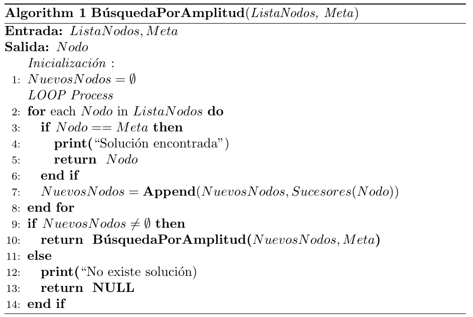
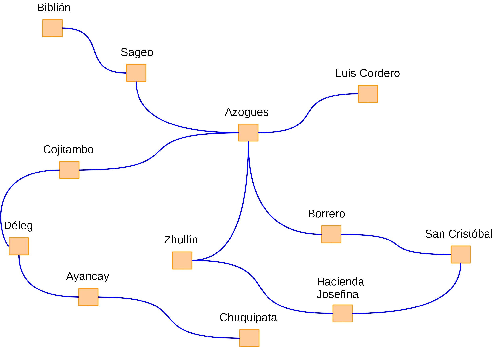
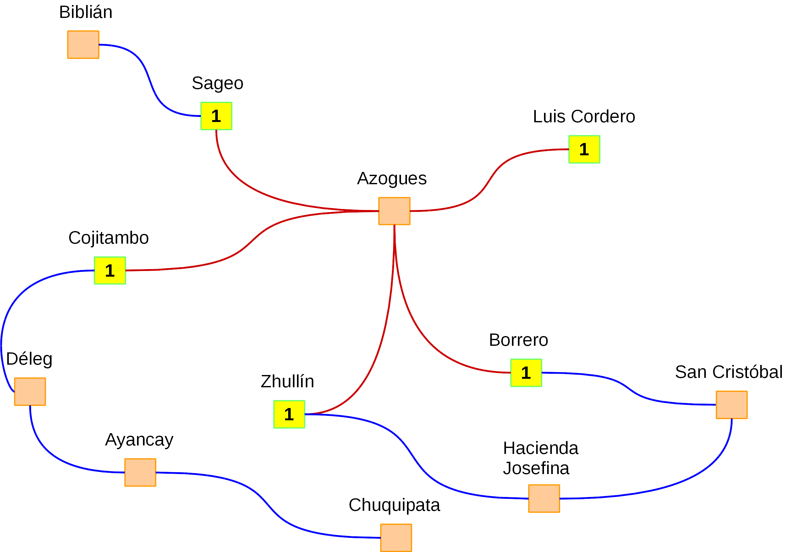
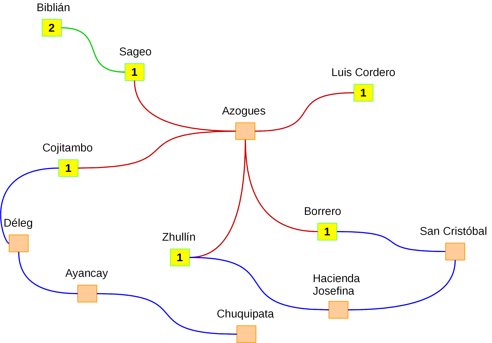
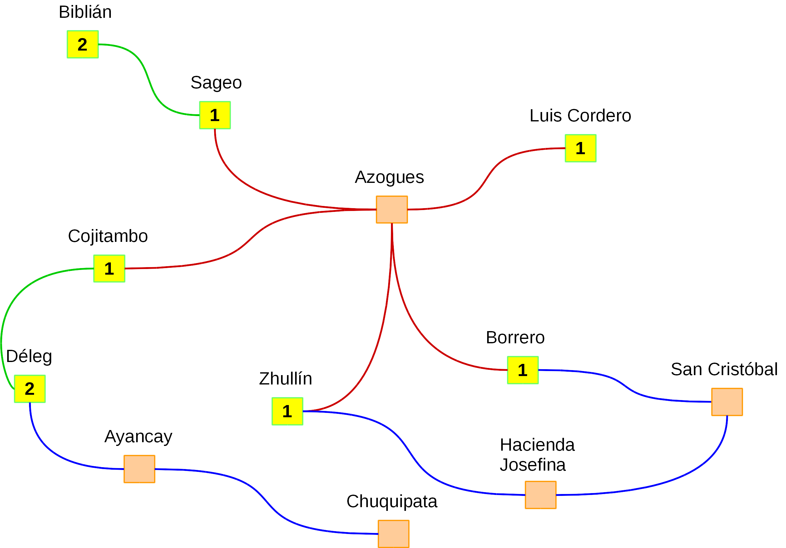
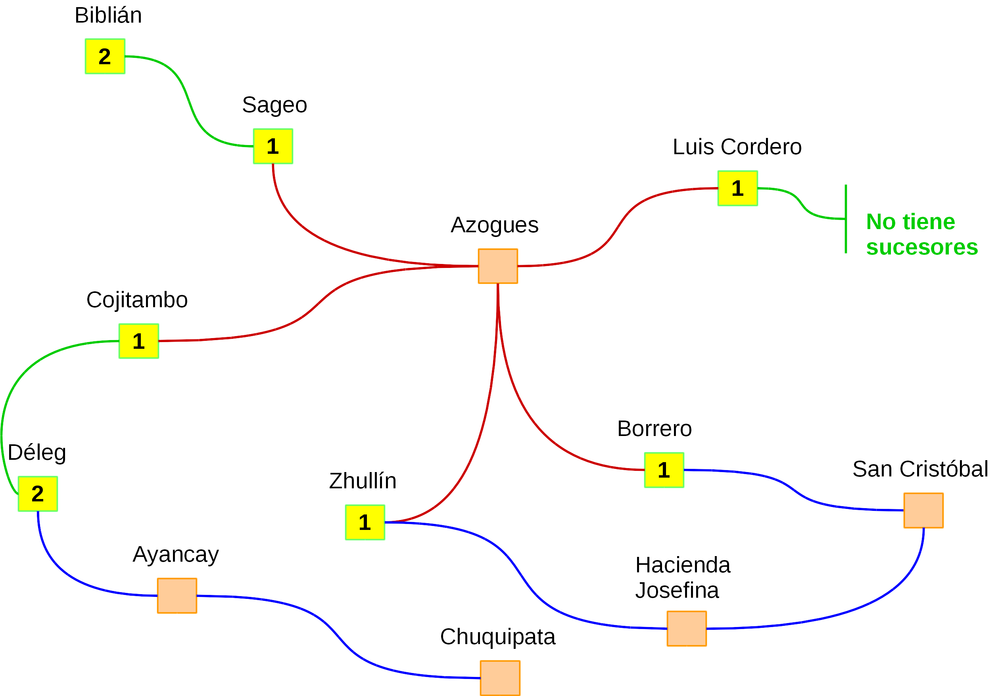
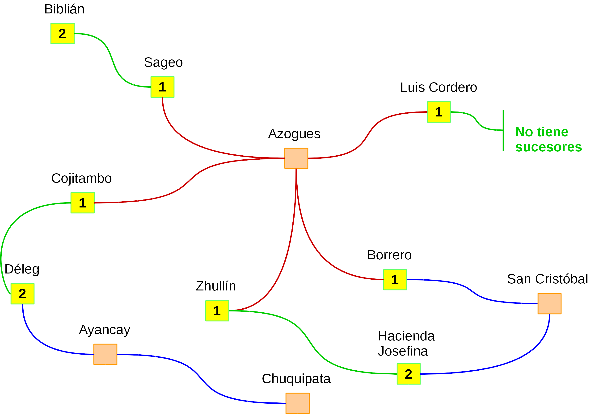
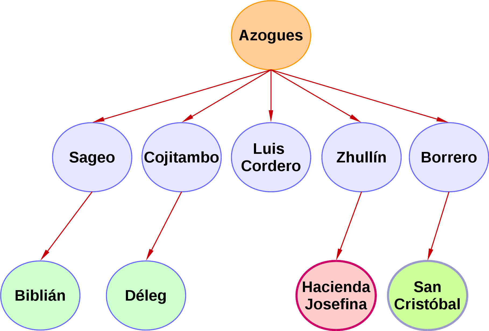
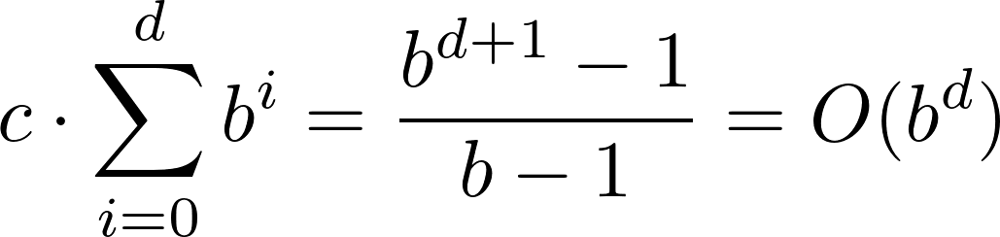

En la búsqueda por amplitud o búsqueda primero en anchura (Breadth-First Search) el árbol de búsqueda es explorado desde la parte superior a la inferior. En este método es importante notar que la búsqueda se realiza revisando todas las trayectorias de cada nivel antes de pasar al siguiente. Si partimos de que estamos en el nivel N del árbol de búsqueda, no se avanzará hasta el nivel N+1 mientras no se hayan visitado todas las trayectorias o caminos posibles del nivel actual (De la Fuente López, 2010).
Por otra parte, también es importante considerar que este método buscará el camino más corto hasta la meta, es decir, no considera costo del camino, sino el número de nodos que debe recorrer hasta llegar a la meta. De igual forma, también se debe tener en cuenta que pueden existir 1 o más estados meta.
El proceso que realiza este método se lleva a cabo de acuerdo al algoritmo que se describe seguidamente (Ertel, 2017):

Como se aprecia en el algoritmo, debemos almacenar una lista con los nodos que vamos visitando. Esta lista generalmente se gestiona a través de la estructura de datos Cola (Queue). También deberemos contar con una lista que nos diga si los nodos ya fueron visitados. Esta puede ser una lista o arreglo simple de la forma: Visitados = {}.
A fin de ilustrar de una manera sencilla cómo funciona este método, vamos a retomar el ejemplo del problema del "viajero", donde dado el siguiente grafo, debemos ir del nodo "Azogues" al nodo "Hacienda Josefina". A continuación se irá explicando paso a paso cómo se lleva a cabo el proceso de búsqueda:

- Como primer paso agregamos el nodo de partida a la cola. Con lo que nuestra lista quedaría definida de la siguiente forma: ListaNodos = {Azogues}.
- A continuación analizamos cuáles son las posibles acciones para el nodo "Azogues". Si partimos de este nodo, el camino actual a los puntos adyacentes (Sageo, Cojitambo, Luis Cordero, Zhullín y Borrero) tienen una longitud de 1 (ya que estamos en el punto inicial). Con ello, podemos movernos a 5 posibles nodos y los agregamos a la cola con sus respectivas distancias (previo a haber sacado al nodo "Azogues" que ya fue visitado y colocado en la lista de visitados):
- ListaNodos = {Sageo, Cojitambo, Luis Cordero, Zhullín, Borrero}
- Visitados = {Azogues}
- 
- Ahora debemos escoger el camino más corto, sin embargo, dado que los 5 caminos tienen una distancia de 1, podemos realizar esta selección de forma aleatoria o simplemente tomar el primer elemento que se colocó en la cola y sacarlos para a continuar visitarlo. Supongamos que sale "Sageo".
- Como seleccionamos "Sageo", lo visitamos y preguntamos si es uno de los nodos meta. Como no lo es, lo sacamos de la lista por que ya se visitó y ahora volvemos a determinar cuáles son las posibles acciones y distancias (respecto al punto de partida) para este nodo. Como se puede observar en la siguiente ilustración, desde "Sageo" solo podemos movernos a "Biblián". Con ello, la cola nos quedaría de la siguiente forma (observe que se coloca al nodo "Biblián" al final):
- ListaNodos = {Cojitambo, Luis Cordero, Zhullín, Borrero, Biblián}
- Visitados = {Azogues, Sageo}
- 
- Ahora preguntamos si el nodo "Biblián" es un nodo meta, y como no es así, continuamos con la búsqueda.
- El siguiente nodo que aparece en la cola es "Cojitambo", procedemos a visitarlo y a obtener las posibles acciones para dicho nodo. En este caso únicamente nos lleva al nodo "Déleg", por ello, sacamos de la cola al nodo "Cojitambo" (previo a preguntar si es un nodo meta), lo incluimos en la lista de visitados y luego pasamos a incluir al nodo "Déleg", como se aprecia en las siguientes listas y en la ilustración:
- ListaNodos = {Luis Cordero, Zhullín, Borrero, Biblián, Déleg}
- Visitados = {Azogues, Sageo, Cojitambo}
- 
- Ahora preguntamos si el nodo "Déleg" es un nodo meta y como no es así, seguimos la búsqueda.
- En este paso continuamos con el nodo "Luis Cordero", lo sacamos de la cola y lo ubicamos en la lista de visitados:
- ListaNodos = {Zhullín, Borrero, Biblián, Déleg}
- Visitados = {Azogues, Sageo, Cojitambo, Luis Cordero}
- Preguntamos si "Luis Cordero" es un nodo meta y como no es así tratamos de expandir sus sucesores. Sin embargo, este nodo no tiene sucesores, por ello, continuamos la búsqueda con el siguiente nodo en la cola.
- 
- En esta iteracción se debe analizar el nodo "Zhullín". Como se ha realizado anteriormente, sacamos al nodo "Zhullín" de la cola, preguntamos si es un nodo meta y lo colocamos en la lista de visitados. Como este nodo no es meta, desde aquí podemos solo ir al nodo "Hacienda Josefina". Procedemos agregar al nodo "Hacienda Josefina" a la cola y continuamos el análisis:
- ListaNodos = {Borrero, Biblián, Déleg, Hacienda Josefina}
- Visitados = {Azogues, Sageo, Cojitambo, Luis Cordero, Zhullín}
- 
- Ahora preguntamos si el nodo "Hacienda Josefina" es un nodo meta. En este casi si lo es, por lo que lo marcamos como visitado y devolvemos la ruta al mismo como resultado:
- Solución = {Azogues, Zhullín, Hacienda Josefina}
Como se aprecia, se ha alcanzado la solución expandiendo los nodos por niveles (como señala el algoritmo). En la siguiente ilustración podemos observar un ejemplo de cómo se han ido expandiendo los nodos. Es importante tomar en cuenta que el algoritmo finaliza expandiendo todos los nodos de un nivel dado (se ha ilustrado con colores los nodos de cada nivel y con color rojo el nodo meta):

Análisis de coste
En virtud de que la búsqueda por amplitud realiza la tarea en un problemas de cualquier profundidad y del mismo modo, llega a dicha profundidad en un tiempo finito, será completa si el factor de ramificación b es finito. La solución óptima, es decir, la más corta, se encontrará si el costo de todas las acciones es el mismo. Por otra parte, se debe anotar que el coste computacional (tiempo) y la memoria crecerán de forma exponencial de acuerdo a la profundidad del árbol (Ertel, 2017).
Si tenemos un árbol con un factor de ramificación b y un nivel de profundidad d, el tiempo total de cómputo estará dado por la siguiente ecuación (Ertel, 2017):

A pesar de que sólo se almacena el último nivel en memoria, el espacio requerido en memoria es también del orden O(b^d).
Propiedades de la búsqueda por amplitud
A continuación detallamos algunas de las propiedades más importantes de este tipo de búsqueda (Oliehoek, 2018):
- Ventajas:
- La búsqueda por amplitud siempre encontrará una solución (si existe al menos 1).
- Encuentra la solución más corta (con menor coste) en términos del número de operaciones que debe ejecutar.
- Desventajas:
- El tiempo requerido para encontrar la solución depende del factor de ramificación y la profundidad a la que se encuentre la solución.
- La memoria requerida para encontrar la solución es b^n (b = factor de ramificación, n = profundidad).
Análisis del algoritmo
Seguidamente se describen los principales aspectos relacionados con el análisis del algoritmo en términos de completitud, optimalidad, complejidad temporal y complejidad espacial (De la Fuente López, 2010):
- Completo: el algoritmo es completo, ya que encontrará la solución siempre y cuando se cuenten con los recursos necesarios (memoria y procesamiento).
- Óptimo: es óptimo ya que devuelve la solución con menor coste.
- Complejidad temporal: dependerá del factor de ramificación y de la profundidad del árbol. El coste temporal es O(b^n), donde b es el factor de ramificación y profundidad del árbol es n.
- Complejidad espacial: requiere almacenar todos los estados que se vayan a explorar durante la búsqueda, con lo que el coste espacial es O(b^n).